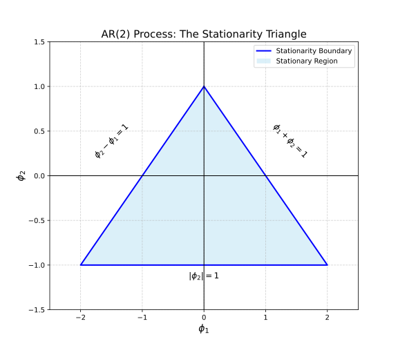

AR Model
The \(AR(p)\) model is expressed as:
An interesting thing is noted with this expression. When compared with the model for linear regression:
They are structurally identical. The values \(\beta_k\) of a linear regression are computed from the data effectively acting as weights that determine the effect of a specific variable \(X_k\) on the outcome. This similar to how the values \(\phi_k\) of an autoregressive model are essentially weights that must satisfy the requirement that all roots (\(B\)) of the characteristic equation must lie outside the unit circle in the complex plane for the series to be stationary. And the values \(Y_{t-k}\) are past observations.
Note that \(\epsilon_t \sim \text{i.i.d. } \mathcal{N}(0, \sigma_\epsilon^2)\). The error has a mean of 0 and constant variance.
Let's explore \(\phi_{k}\). Using the Backshift Operator any \(AR(p)\) model can be expressed as:
In a simple \(AR(1)\) model there is only one root. Therefore, the condition is simply:
The absolute value of \(\phi_1\) should be less than one in order to prevent the model from experiencing a runaway either in the positive or negative direction. In the model:
If the absolute value of \(\phi_1\) is larger than 1 and positive this will cause the value of \(Y_t\) to continuously grow very large. Given that \(\phi_1 = 1\) and \(\epsilon_t\) is white noise with a mean of 0 thus can be disregarded for this proof.
| Step (t) | Explosive (phi = 1.5) | Stationary (phi = 0.5) |
|---|---|---|
| Formula | \(Y_t = 2 + 1.5 Y_{t-1}\) | \(Y_t = 2 + 0.5 Y_{t-1}\) |
| \(Y_0\) | 1.000 | 1.000 |
| \(Y_1\) | 3.500 | 2.500 |
| \(Y_2\) | 7.250 | 3.250 |
| \(Y_3\) | 12.875 | 3.625 |
| \(Y_4\) | 21.312 | 3.812 |
| \(Y_5\) | 33.968 | 3.906 |
| \(Y_{10}\) | 175.341 | 3.997 |
| Long-run | Diverges (\(\infty\)) | Converges (\(\mu = 4.0\)) |
The convergence to 4 is from the long run mean proof:
If we increase the autoregressive order to 2, an \(AR(2)\) model needs to satisfy three conditions:
This forms a stationarity triangle within which both values must fall for the distribution to be stationary.

These values correlate with the roots \(z_1\) and \(z_2\) obtained from solving the characteristic equation \(1 - \phi_1z - \phi_2z^2\). The coefficients are tied to the roots:
The coefficients are symmetric functions of the inverse roots. This results from the roots being computed from the characteristic equation:
This is from the \(AR(2)\) model:
To prove the coefficients being tied to the roots Vieta's Formulas are employed. In higher order \(AR(p)\) models the logic of the roots of the characteristic equation being outside the unit circle is employed with the coefficients correlating in more complex manners.